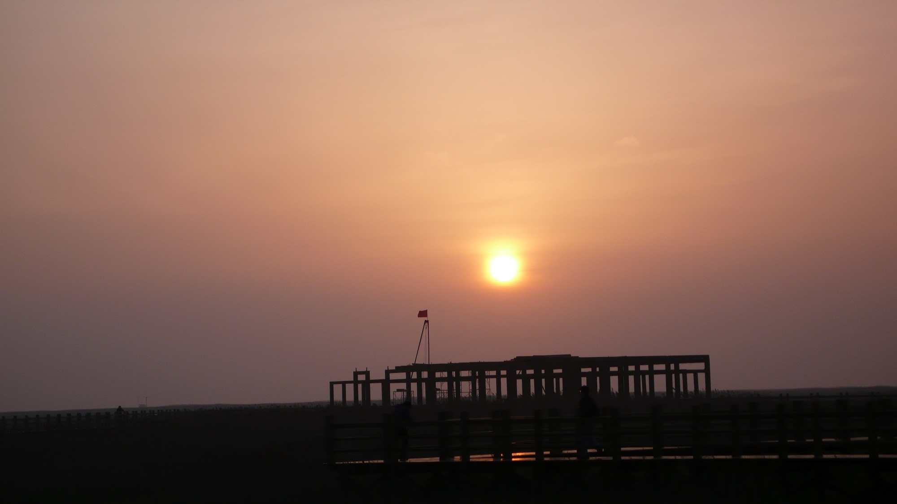

发信人: joannajo (joannajo), 信区: outdoor
标 题: 关于崇明
发信站: 饮水思源 (2010年05月06日02:36:41 星期四)
看见关于巨龙项的文章，发现原来的各哥们在如此坚毅的外表下有如此细腻的内心和如此
磅礴的诗意，不禁再次感叹我是粗人。。。关于崇明骑游，等了两晚也不见人发照片展现
外表，也不见人发文抒发内心和诗意，估计是回来就上课，小朋友没有空闲，想想自己人
老色衰，也不知以后还有没有这样的机会和大家同行，终于忍不住发文一篇。
5点40的集合意味着我头一天得从徐汇过来住学妹的寝室和当天得5点起床，后者仿佛是我
有记忆以来从来没有过的。步行到轻轨站是意料之外，但也情理之中的，野协嘛，怎么好
意思打车去呢。地铁上的拥挤自不必说，到吴淞码头赶上轮渡，不久后就到达南门了。一
下船就知道车和年轻貌美的重要性了，尽管外行不过是凑凑热闹。看见美女的车贴的是维
多利亚，我的车贴的是上海交大，瞬间预料到知道这趟的艰苦了。还好蒙同学们不弃，把
各种好车都借我感受了一下。
第一天的背包骑行是艰苦的，一路上大家的屁股煎熬啊。走走停停了四五次。我太菜，骑
得专心，对路边的美景没什么记忆了。
screen.width - 200){this.width = screen.width - 200}">
screen.width - 200){this.width = screen.width - 200}">
screen.width - 200){this.width = screen.width - 200}">
晚餐在一家老板娘很好看的小店里吃的。味道不怎么特别，尽管都是些鱼蚌，但不是什么
好货色，也不下饭，但是饥饿的人们依然吃了4,5碗饭。。。讨价还价的时候老板娘没有顾
及我们对她头发的赞美，还是好好骂了并宰了我们一顿。夜黑风高，我们继续骑行。传说
只有4公里就到达营地。加入野协以后，我一直知道只有**公里了这句话是靠不住的，领队
们没有任何激励告诉群众真相。果然，很久以后我们到达了东滩湿地。
screen.width - 200){this.width = screen.width - 200}">
东滩湿地是自然保护区，而且我们连门票都没有买就想在这里7,8个扎营。于是我们走到了
木桥最尽头的亭子里扎营。关于帐篷等忙忙碌碌了半天，风很大，木桥很窄，帐篷很旧。
扎好营都10点了吧。终于空下来了，才发现这个营地是是我见过最美的（还记得第一次扎
营是在十字峡谷半山腰的垃圾堆里，第二次扎营是正冲着在江安某镇的一户人家家门口的
）。木桥两旁是高高的芦苇长在湿地里，下玄月不太亮，但是很多星星很近。抱歉我真的
不太会描述美景，总之真的很美。。。我保证！我没有一刻是睡着的。。。我对美丽的事
物还没有这么激动，只是骑车和徒步不同，运动量大而来得迅速，浑身的汗，一擦都是盐
，帐篷里闷湿难耐，钻井睡袋太热，爬出来太冷，风还很大，帐篷一直轻微的摆着两旁还
有蛙叫。帐篷外好像有一个人背对而坐，月光下背影的轮廓很分明。直到两点，我想到风
这么大，守夜的同学实在可怜，忍不住出去探望并加入，一些闲聊就到了4点半。其间有传
言称我们这种没买门票的行为被抓住会拘留个十天半个月，于是每每有过路的车灯远远看
见我们都马上蹲下悄悄聊天。。。今天回忆起来，突然觉得又被群众了一把。
screen.width - 200){this.width = screen.width - 200}">
4点半，叫大家起来看日出咯！日出，芦苇里的日出，湿地上芦苇里的日出，站在湿地上的
芦苇上的木桥上看的日出，怎么说呢，我只能说抱歉我真的不太会描述美景，总之真的很
美。。。我保证！
 screen.width - 200){this.width = screen.width - 200}">

边一顿狼吞虎咽就上路了，今天包被卡车先运走了，连带着运了一个两个大小腿四块肌肉
抽筋的，一个食物过敏的，一个刚睡醒的。其他人风一般的享受着没有背包的骑行，感到
生活的惬意。但是无暇顾及两旁的风景是这种极端惬意带来的，30公里/时无论对于我还是
我上海交大牌的自行车来说都是一个挑战。幸好还有两次休息很值得回味。一次是抓螃蟹
，在岸上很多防洪的水泥砖块，缝隙里都是半个手掌大的螃蟹，我们用芦苇杆做成筷子，
一个一个把他们夹出来，放进一个粉红色的垃圾袋里。看见一群过了气老孩子们带劲地捉
螃蟹和江面上的阳光，那时候我突然回忆起某部影片里帅气的男小三跟女主谈红酒时的一
句话：The moment is life. 师姐问过我想问生活要什么？也许这就是生活的全部，一两
个moment罢了。第二次是去抱羊子，老羊和羊羔们黄黄白白的各不相同，我去追赶一个全
咖啡色的小羊羔，结果被它跑出好远，几经周折才把它抱住。骄傲地合照了一张，满意的
离去了。
后来就到了镇上吃了顿好的，后来就到了码头，后来就到了闵行，后来就回了宿舍，后来
就洗了澡吃了东西，后来一觉醒来就下午1点了。。。于是就这样过了。于是就继续论文了
，于是就被抽中盲审了，于是就更要继续论文了。所以就写到这儿吧。祝好！祝大家都好
！
--
※ 来源:·饮水思源 bbs.sjtu.edu.cn·[FROM: 211.80.37.64]
※ 修改内容:·joannajo 于 05月06日02:37:29 修改本文·[FROM: 211.80.37.64]
※ 修改内容:·joannajo 于 05月06日02:37:44 修改本文·[FROM: 211.80.37.64]
|